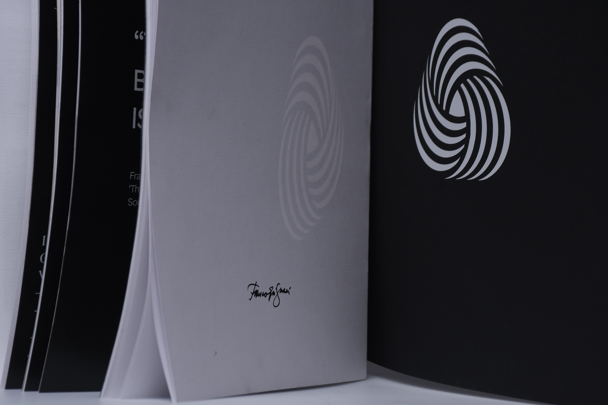
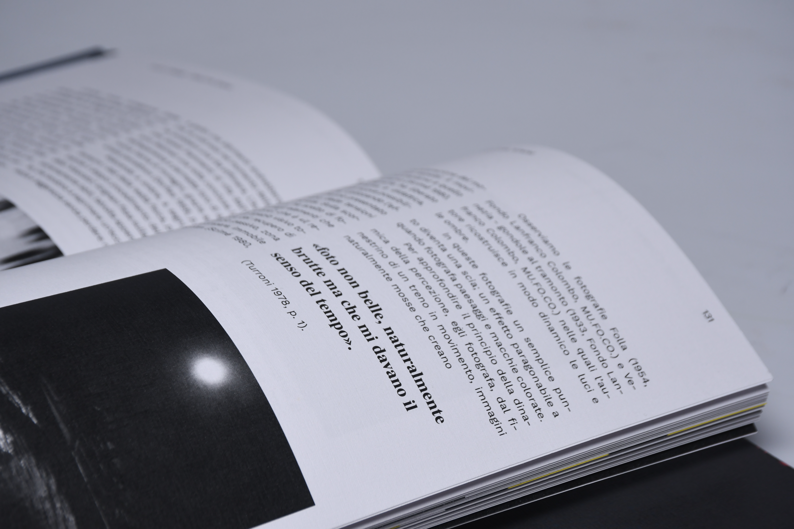
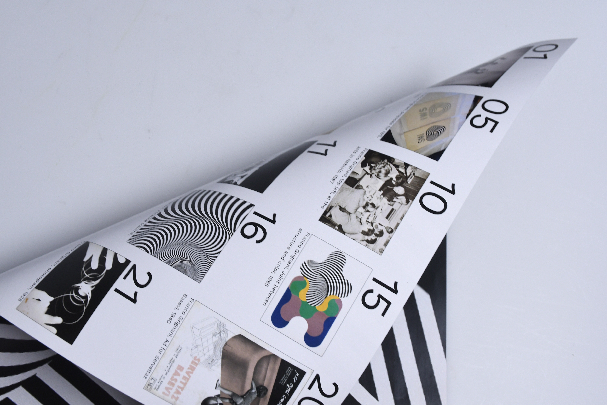
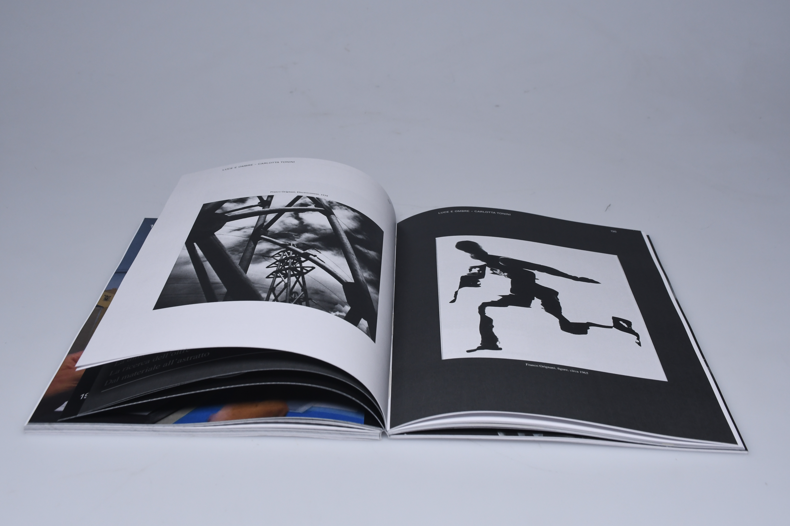
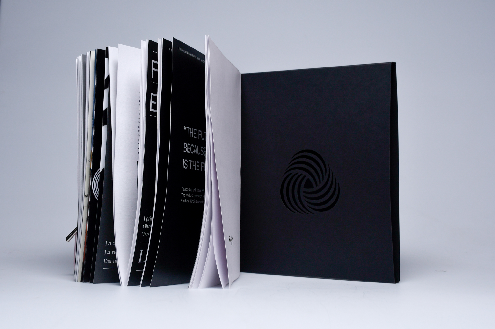

Franco Grignani
CONCEPT
“Franco Grignani – Duality” is an editorial product that explores the work of one of the greatest Italian designers of the 20th century. A master of experimental design, Grignani is best known for merging art and science into compositions that challenge perception and explore the boundaries of form.
These elements, combined with his strong drive for photographic experimentation, are brought together in this monograph, which is divided into five chapters: Perception and Pre-cognition, Black and White, Art and Science, Light and Shadow, Functionality and Creativity.
“How to make two opposite
concepts coexist in the same space?”



